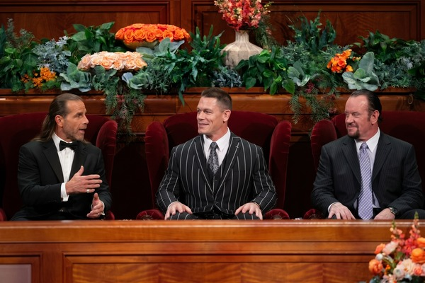
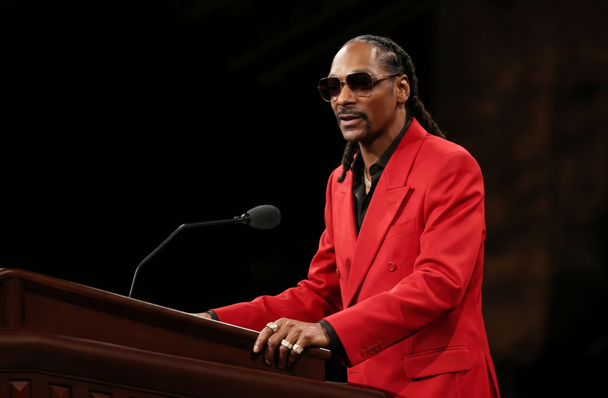
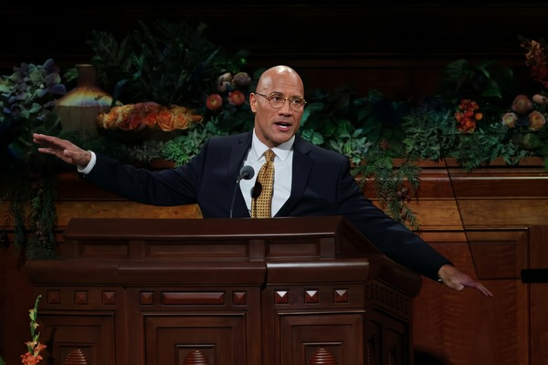

Welcome

Welcome to the Ultimate Smackdown Symposium! Note: this website was created purely for fun and is part of an engagement activity in a Web Design class.
Table of Contents
- Snoop Dog
- The Rock
- When should you use a background image, and when should you use the IMG tag?
Snoop Dogg

This is the image that was resized using CSS.
Snoop Dogg, born Calvin Cordozar Broadus Jr., emerged in the early 1990s as one of the defining voices of West Coast hip-hop and the G-funk movement. Discovered by Dr. Dre and featured prominently on the seminal 1992 album The Chronic, he quickly achieved solo superstardom with his chart-topping 1993 debut album Doggystyle. His smooth, laid-back vocal delivery contrasted with the gritty reality of his gangsta rap background, making him a unique musical force. Over the decades, he has evolved from a Long Beach rapper into a ubiquitous pop-culture icon, actor, and entrepreneur
The Rock

Dwayne "The Rock" Johnson transitioned from a third-generation professional wrestler into one of the highest-grossing box-office stars in Hollywood history. Before capturing 10 world championships in WWE, he played college football for the University of Miami, winning a national championship in 1991.
When should you use a background image, and when should you use the IMG tag?
When you want to display an image as part of the content, use the IMG tag. When you want to display an image as the background of an element, use a background image.